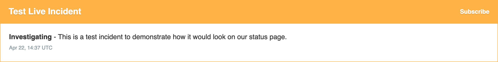
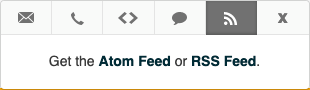

How to view the UKCloud Service Status page
Overview
The UKCloud Service Status page enables you to monitor the availability and overall health of the services on the UKCloud platform.

Viewing service status information
Platform status
Incidents are displayed at the top of the page and are indicated by a yellow (performance degraded) or red (outage) banner, with details of the incident and its current status.

Scheduled maintenance is indicated by a blue banner, with details of what the maintenance work involves and its current status.
If there are no incident or scheduled maintenance alerts, a green banner at the top displays All Systems Operational.

Below the alerts for incidents and maintenance, you can see any general information about the status of the platform.
Click View historical uptime to view uptime and incident information for past months.

Upcoming maintenance work and recent incidents are listed at the bottom of the Service Status page.
Service status
As well as the overall status of the platform, the Service Status page also shows the status of each service on the UKCloud platform.
For each service, you can see the availability over the last 90 days, with each day represented by a bar. Hover over a bar to see a popup with details for that day. If there are no issues with a service, the status is reported as Operational.
The uptime figure indicates what percentage of the last 90 days the service was available for.
Click the + icon to expand the service to see the status of specific components within the service. For example, for Connectivity, you can see the status of each connectivity type (Internet, PSN, HSCN, Janet, RLI); for UKCloud for VMware, you can see the status for each UKCloud zone.
If service availability is impacted, the bar for that day displays in a different colour and the status is reported as Under Maintenance, Degraded Performance or Outage.

Subscribing to the Service Status page
You can subscribe to the Service Status page to receive updates when information is updated.
On the UKCloud Service Status page, click the Subscribe to Updates button.

To receive email notifications:
Click the envelope icon, enter your email address, then click Subscribe via Email.

Confirm your subscription by clicking the Confirm subscription button in the email you receive.
On the Notifications Subscription page, you can specify individual components for which you want to receive notifications.
To receive text notifications:
Click the telephone handset icon, enter your phone number, then click Subscribe via Text Message.

Click the link in the confirmation text message you receive to manage your subscriptions.
To receive webhook notifications, click the code icon (<>), enter the URL of the endpoint to send the webhook to and the email address to send any associated error messages, then click Subscribe to Notifications.

You'll need to set up an endpoint to receive the webhook requests. For more information about webhooks, see the Atlassian Statuspage documentation: Webhook Notifications. For example code for setting up an endpoint, see How to use webhooks to receive service status notifications.
To subscribe to the Atom/RSS feed, click the RSS icon and then click the Atom Feed or RSS Feed link.

For more information about UKCloud Support, click the speech bubble icon, then click the support site link.

You can also subscribe to notifications for a specific incident or maintenance window:
Click the Subscribe link in the banner for that incident or maintenance alert.
Enter your email address or phone number, then click Subscribe to Incident.

Feedback
If you find an issue with this article, click Improve this Doc to suggest a change. If you have an idea for how we could improve any of our services, visit the Ideas section of the UKCloud Community.